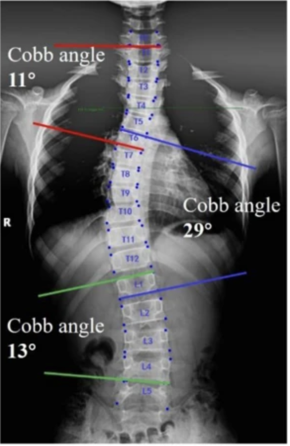
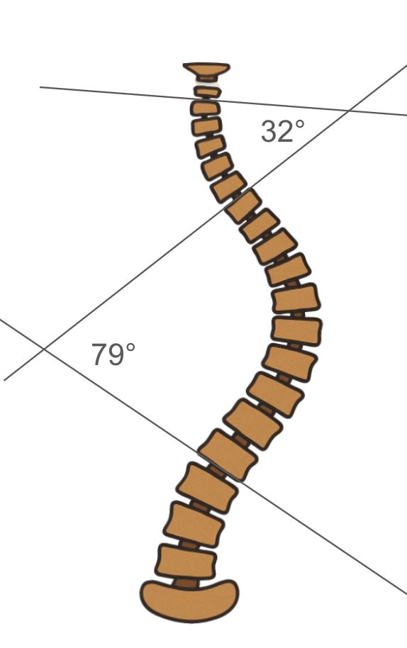

1) Description of Measurement
The Cobb Angle is the standard radiographic method for quantifying spinal curvature in scoliosis and assessing the severity of coronal plane deformity. It measures the angle between the most tilted vertebrae at the upper and lower ends of a spinal curve, providing an objective estimate of curve magnitude. Cobb angles are used to:
While most commonly applied to thoracic and lumbar curves, the same technique is used in whole-spine images to evaluate global deformity and compensatory curves.
2) Instructions to Measure
3) Normal vs. Pathologic Ranges
Key Points:
4) Important References
Cobb JR. Outline for the study of scoliosis. In: Instructional Course Lectures. Vol 5. American Academy of Orthopaedic Surgeons; 1948:261–275.
Weinstein SL, Dolan LA, Wright JG, Dobbs MB. Effects of bracing in adolescents with idiopathic scoliosis. N Engl J Med. 2013;369(16):1512–1521.
Lenke LG, Betz RR, Harms J, et al. Adolescent idiopathic scoliosis: a new classification to determine extent of spinal arthrodesis. J Bone Joint Surg Am. 2001;83(8):1169–1181.
Konieczny MR, Senyurt H, Krauspe R. Epidemiology of adolescent idiopathic scoliosis. J Child Orthop. 2013;7(1):3–9.
Schmid SL, Buck FM, Böni T, Farshad M. Radiographic measurement error of the scoliotic curve angle depending on positioning of the patient and the side of scoliotic curve. Eur Spine J. 2016 Feb;25(2):379-84. doi: 10.1007/s00586-015-4259-5. Epub 2015 Sep 30.
5) Other info....
Cobb Angle remains the gold standard for quantifying scoliosis on plain radiographs.
In double or triple curves, each curve’s Cobb angle should be measured and labeled (e.g., T4–T10 = primary thoracic; T11–L3 = lumbar compensatory).
EOS low-dose standing images or long-cassette X-rays are preferred for comprehensive spinal balance assessment.
Global alignment can also be assessed using additional parameters (e.g., coronal balance line, sagittal vertical axis, pelvic tilt).
Inter-observer variability is typically within ± 5°; use consistent landmarks and tools (manual goniometer or PACS software).
Cobb angle progression > 5° over serial exams indicates true curve progression and may alter treatment planning.